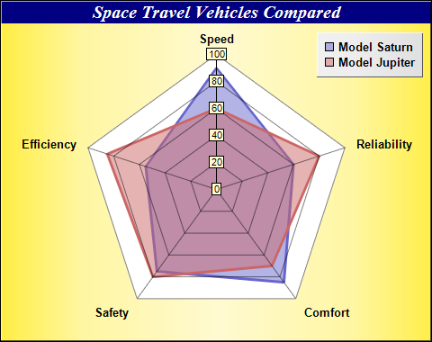

This example demonstrates a radar chart with two layers and a number of chart formatting effects.
- Create a PolarChart object using PolarChart.PolarChart, using a golden color created with Chart::goldColor as the background color.
- Add a title to the chart with white text on a deep blue background using BaseChart.addTitle.
- Specify the polar plot area of the chart using PolarChart.setPlotArea.
- Add a legend box to the chart using BaseChart.addLegend. Set the legend box background to silver with 3D border effect using Box.setBackground. The silver color is created using Chart::silverColor.
- Add two polar area layers using PolarChart.addAreaLayer. Use semi-transparent colors as the area fill colors to avoid the top layer blocking the bottom layer.
- Add two polar line layers with PolarChart.addLineLayer, using the same data as the polar area layer. Set a thick line width using PolarLayer.setLineWidth. The line layers becomes borders of the area layers to highlight the areas.
- Specify the labels on the angular axis using AngularAxis.setLabels.
- Pass the chart to the CChartViewer for display using CChartViewer.setChart (MFC version) or QChartViewer.setChart (Qt version), or generate the chart as an image file using BaseChart.makeChart (Command Line version).
- Generate tool tips for the chart using BaseChart.getHTMLImageMap. (MFC/Qt version)